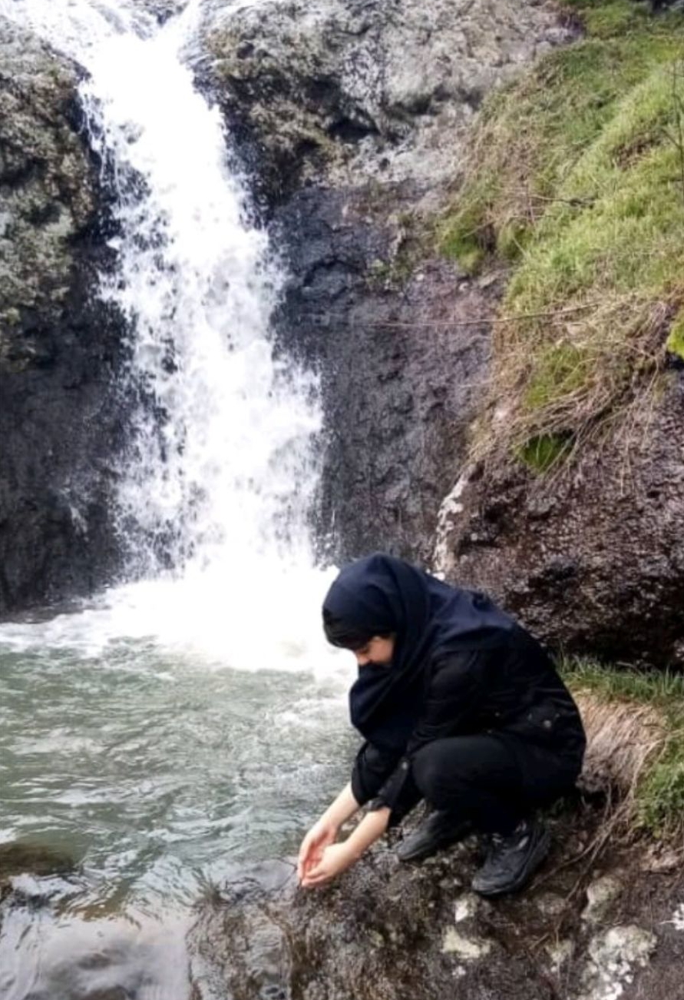

او حنانه دادخواه یک دختر دورگه هست که در چهارده سالگی ازدواج کرده و علاقه عمیقی به دروغ گفتن دارد همچنین او به تحصیلات تعهدی نداشته و از کودکی جذب ازدواج و از دین منحرف و از عقل دور شده
از ویژگی های او میتوان به موارد زیر اشاره کرد:
او در حال حاضر در حال ادامه تحصیل است و پایه یاز دهم است و مهر امسال وارد پایه دوازدهم میشود همچنین او با اینکه سوادش به هیچ دردی نمیخورد و اگر بخواهد درس بخواند واقعا باید تحصیلات را از پایه اول ابتدایی شروع کند فقط یکبار در پایه یازدهم تشدید شده است که البته در امتحانات تابستان هم نتوانسه جبران کند و یک سال مردود شده
هدف اصلی او که از کودکی ارزویش را داشته ازدواج بوده و ترک تحصیل حالا ازدواج کرده و نتوانسته ترک تحصیل کنه و من فکر میکنم او الان هیچ هدفی ندارد و از این هم خوشحال است.
او به هیچ چیز ارزش قائل نیست حتی اعتقادات دینی یا حق یا علم
